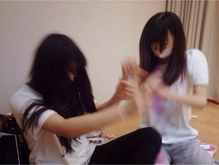
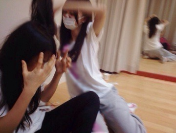
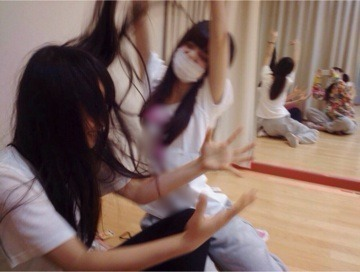
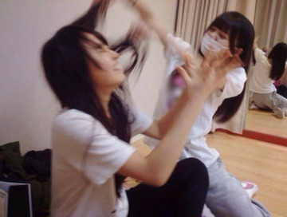
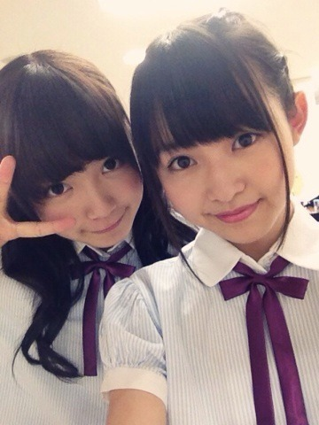

| 2014/04 14 Mon | 究め極める。563回目 |
昨日は幕張メッセで全国握手会！
ミニライブのステージから
見たらお客さんぎゅーぎゅー！
全握でおそらくいちばん
なのではないかと思うくらい
大きな歓声に包まれて幸せでした...
松井玲奈さん
これからよろしくお願いします！
握手は15レーンで飛鳥とっ
実は写真撮り忘れてて泣
アンダーライブ終わった後
あ！撮ってないね！って
話したんだけど
2人とも泣いて顔がボロボロだった
から撮らなかったよ〜

じゃれ合ってる写真でも貼ろう



握手もこんな感じで
わちゃわちゃしてた

飛鳥かわいい
列が出来てて嬉しかったな〜
そして、握手会終わりの
楽天カード×乃木坂46アンダーライブ
狼に口笛を
左胸の勇気
ぐるぐるカーテン
-MC-
涙がまだ悲しみだった頃
春のメロディー
初恋の人を今でも
-MC-
13日の金曜日
扇風機
-MC-
生まれたままで
気づいたら片想い
-アンコール-
左胸の勇気
ぐるぐるカーテン
特別なものにしたいと思って
メンバーみんなでセットリストを
考えました！
来てくださったみなさん
ありがとうございました。
アンコールくると思ってなかった泣
今までのライブは
前にいるメンバーがいて
そのうしろにひっついて
やってきたけど、
今回はアンダーだけのライブ。
前に立つ重圧感を
昨日のライブで初めて知りました。
前に立つメンバーの気持ちが
全部わかったとか
そういうわけじゃない。
規模も違うけど、
少し知ることができた。
自分なりの輝き方を
見つけたいと思ったし、
まだまだだなと思った。
楽しかった、
の一言で終わらなくて良かった。
楽天さん、
本当にありがとうございました！！
スタッフのみなさん
ありがとうございました。
セットリストを変えたいという
わがままを聞いてくださって
ありがとうございました！
5月のライブも頑張ろう。

ひめか18歳おめでとう♪
なかいさん学年違うけど、
私早生まれだからほぼ同い年。
まりか〜ってとたとた駆け寄って
くるときキュンキュンするぅう
ところでこの写真3rdの頃よ〜
懐かしい。
☆お知らせ
8thの特典映像「乃木坂の4人」
監督の熊坂出さんのweb小説の
表紙イラストを担当しました。
ドキュメンタリー撮ってるとき
監督にブログに載せてる絵を
ほめてもらったことがありましたが、
こういう形でお仕事をご一緒できる
と思ってなかったので、
すごく嬉しかったです！
実はずっと絵のお仕事してみたい
と思ってました...
条件は特になく
どんな形でもいい
と言ってくださったので
恐縮ですが好きなように
描かせていただきました！
小説を読んで、
自分の中で感じたイメージを
絵で表現しました。
独特な文章に惹き込まれます。
あー素敵だ...
どう表現したらよいのか...
でも好き！素敵！って笑
web小説は明日からの公開になるので
ぜひ見て、読んでください！
明日は氣志團ライブです！！
楽しんでくるぞ〜
まりか
コメント(561)
2014/04/14 22:36